Creative Work
Artwork
Some art peices I have done in my free time that I am proud of.
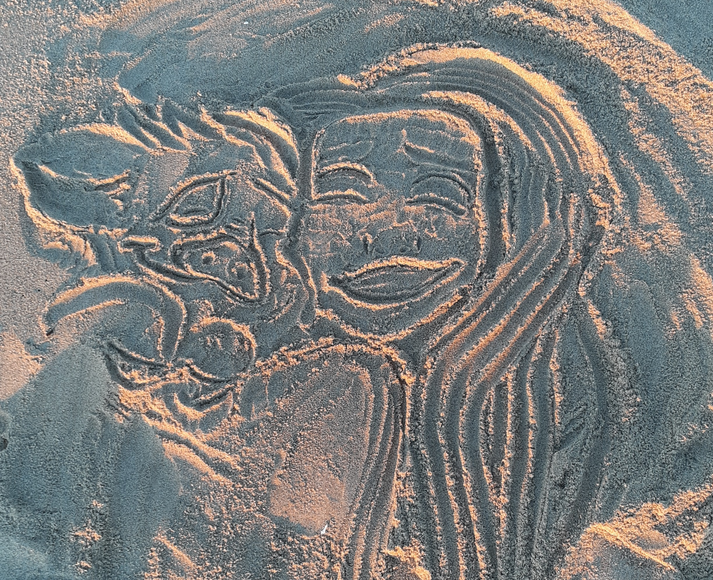
Moana and Pua
A drawing of Moana and Pua in the sand.
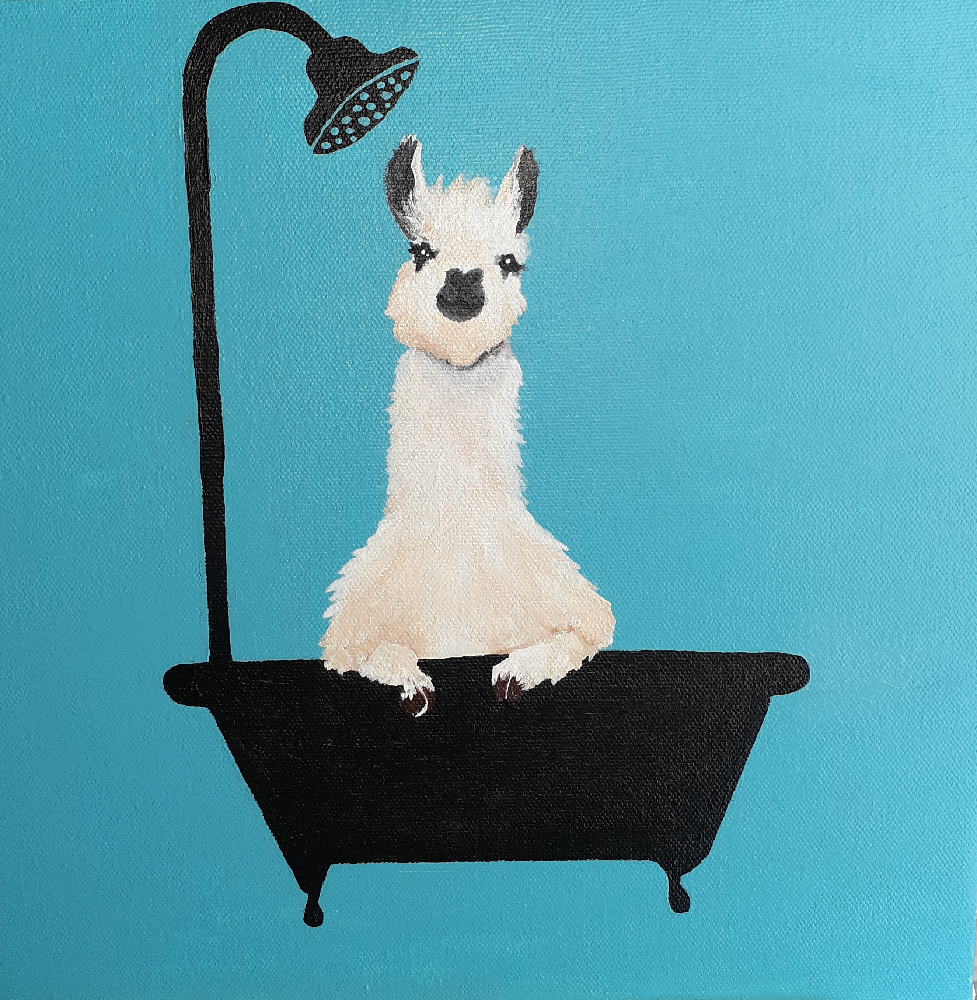
Llama in a bathtub
Painting I did for my mother.
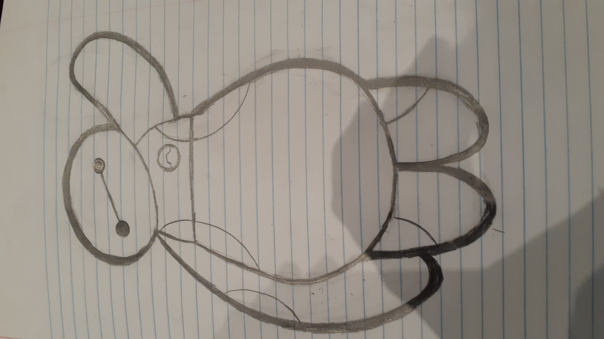
Baymax Sketch
Pencil sketch of Baymax from Big Hero Six.
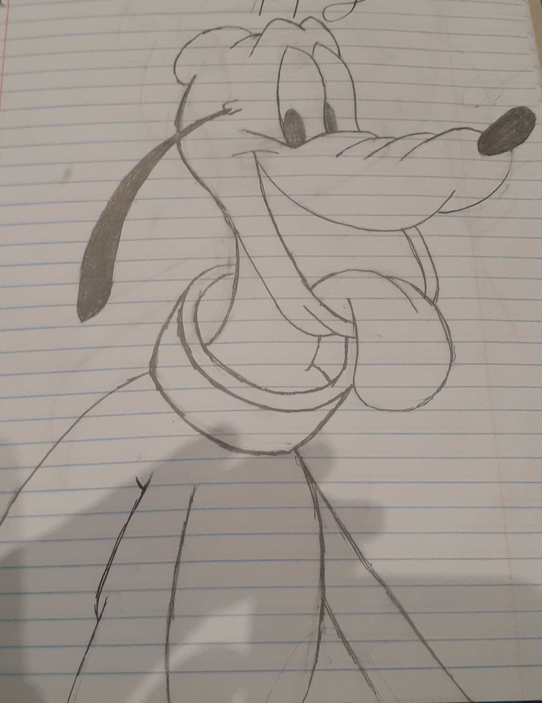
Pluto Sketch
Pencil sketch of Pluto Micky Mouse's Dog.
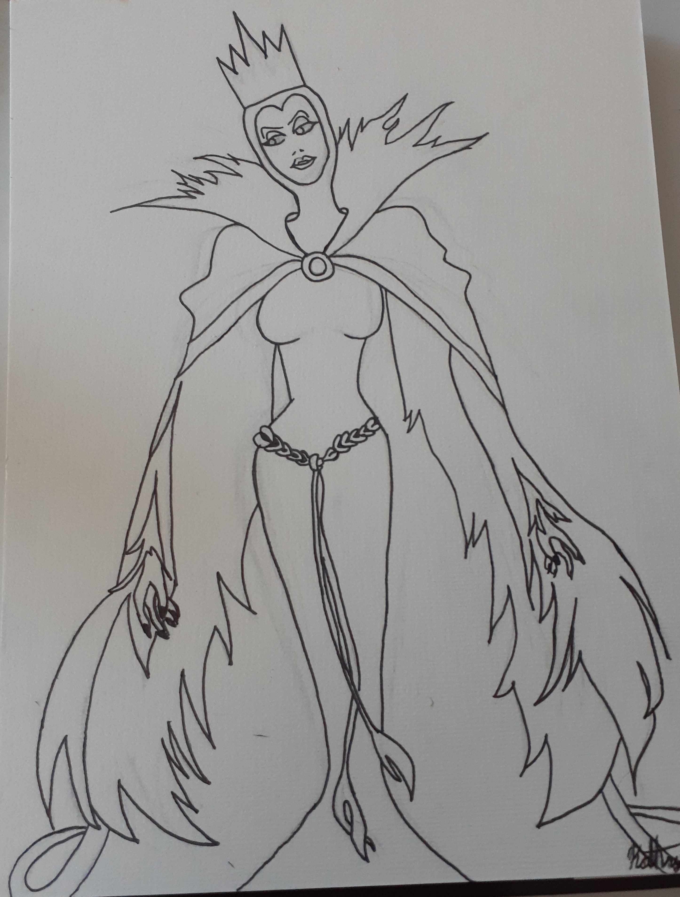
Evil Queen Drawing
I did this drawing for my Aunt, The Evil Queen in her favorite character.
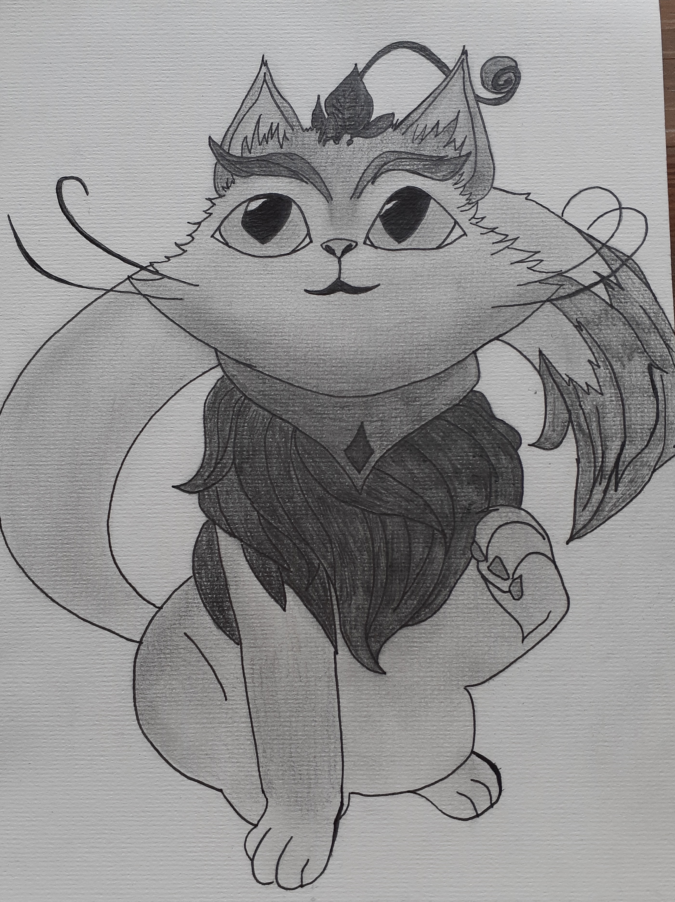
Yuumi Drawing
Pencil drawing of Yuumi my favorite champ from League of Legends
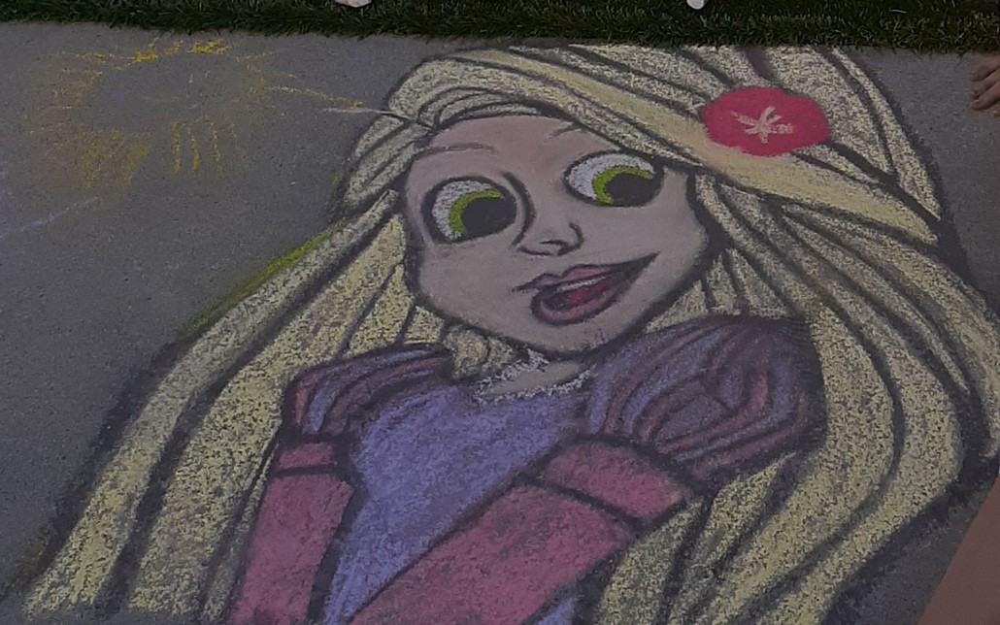
Rapunzel Chalk Drawing
Chalk Drawing I did of Rapunzel while playing with my neighbors kids.
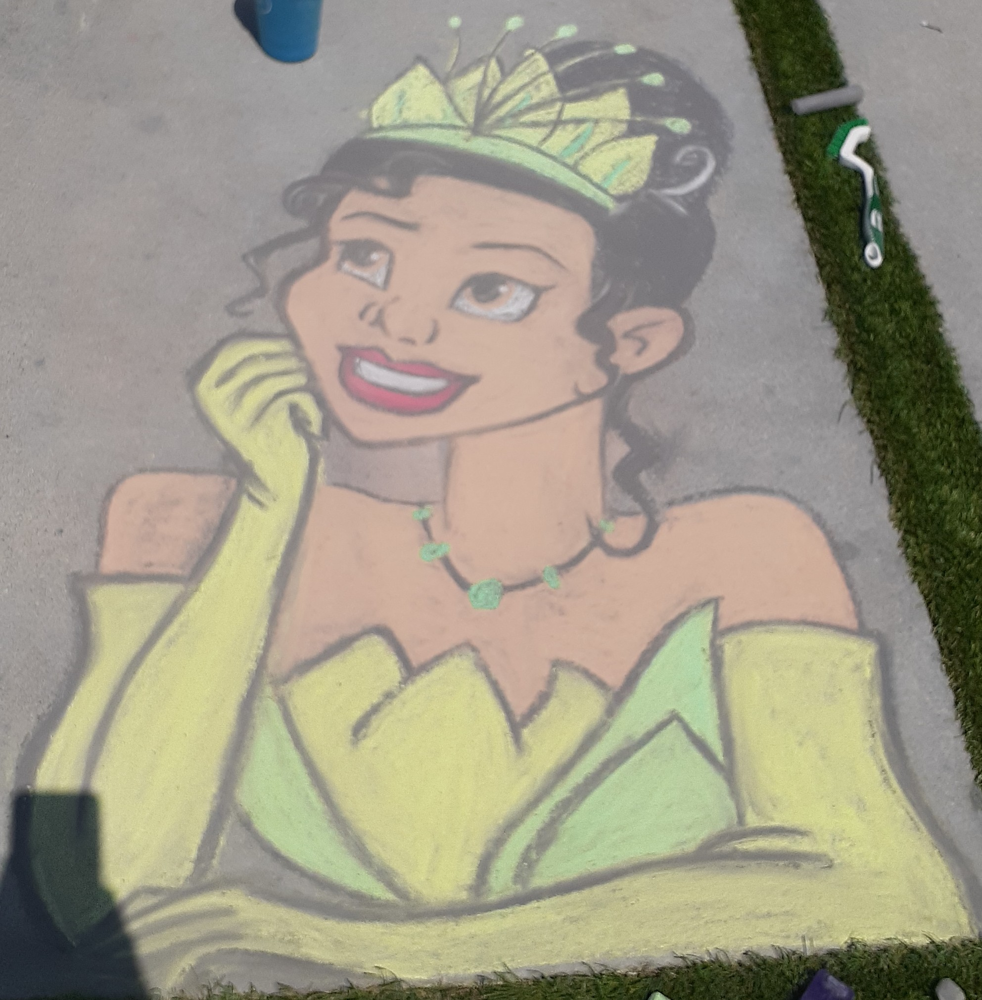
Tiana Drawing
Chalk Drawing of Princess Tiana.
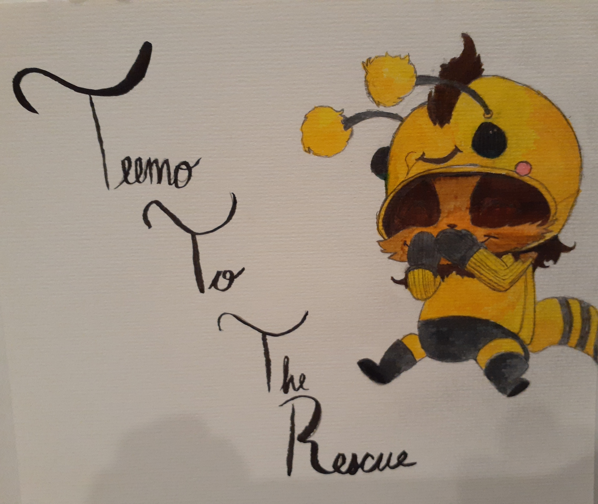
Teemo Drawing
Drawing of Teemo I did for a family friend also from League of Legends.
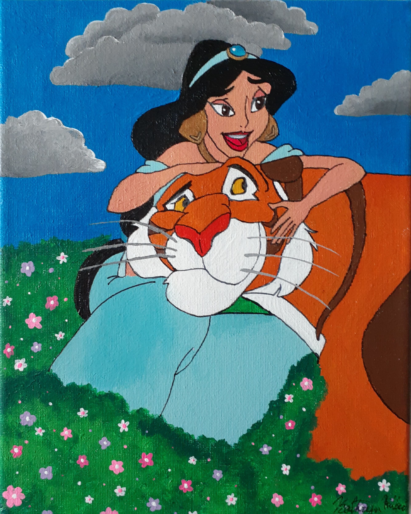
Painting of Jasmine
Painting of Princess Jasmine.
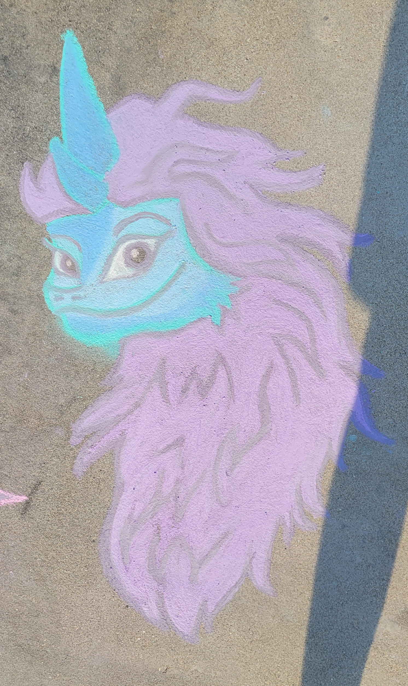
Chalk Drawing of Sisu
Chalk Drawing of Sisu from Raya and The Last Dragon.
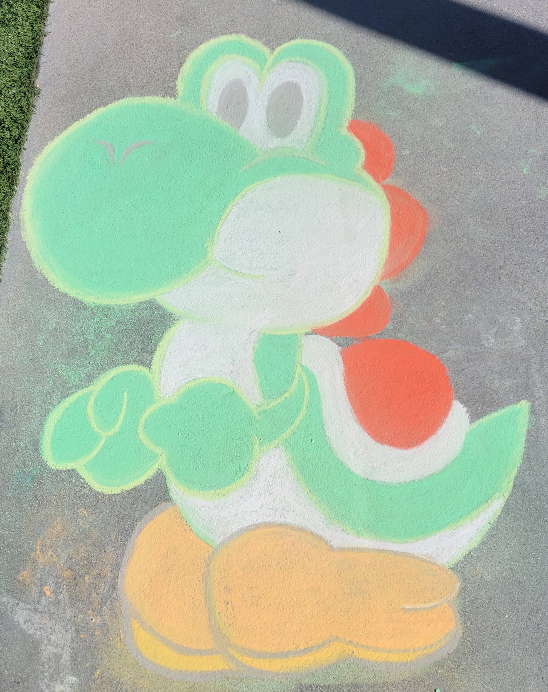
Yoshi Chalk Drawing
Chalk Drawing of Yoshi from Nintendo.